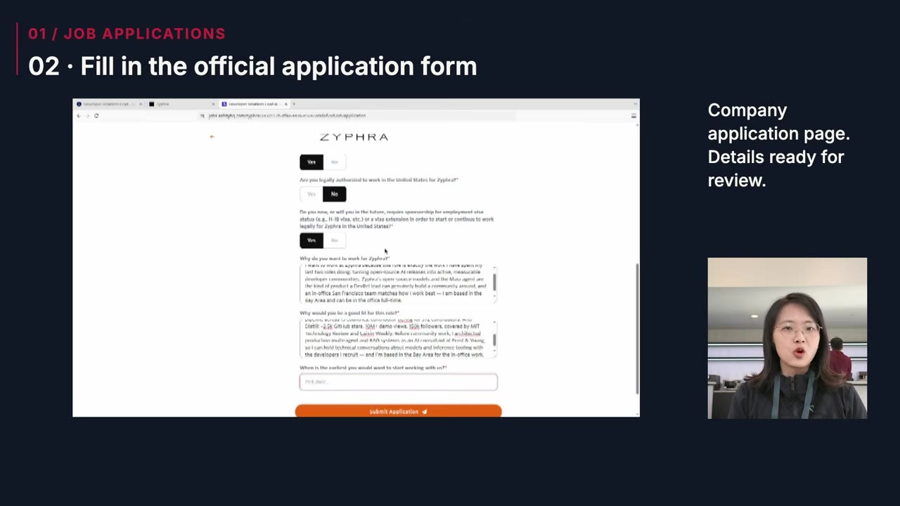
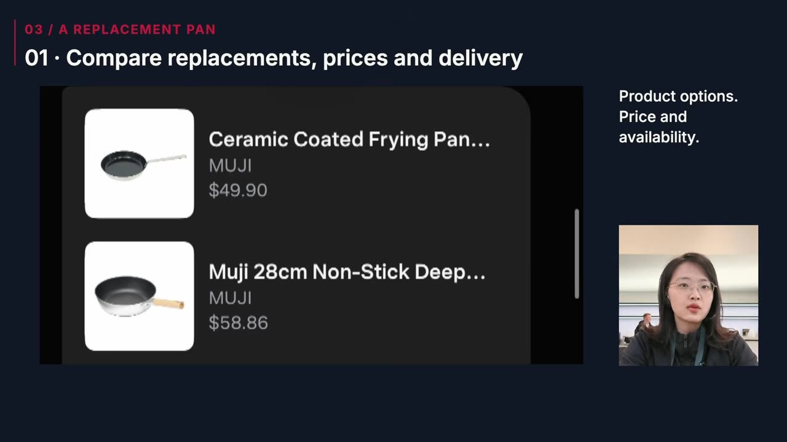
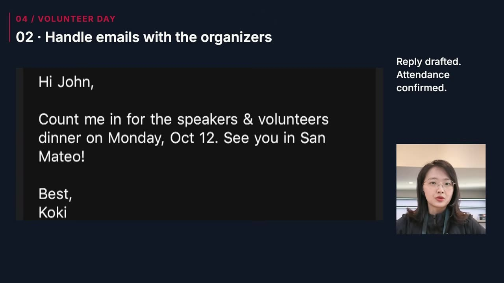
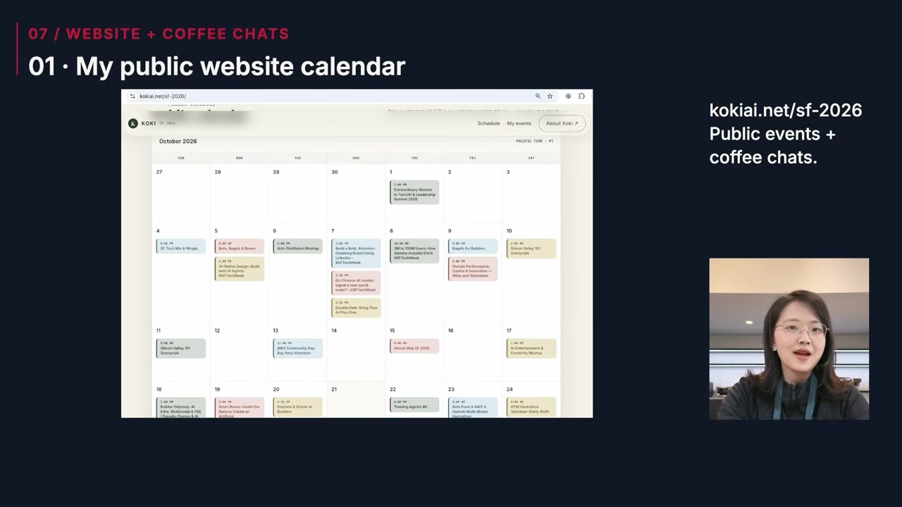

Personal Agent · Tutorial
How I Use Muse:
7 Practical Examples for Work & Life
I'm Koki, a lawyer turned AI builder. I've used Muse for almost a month and it has fully become my main personal AI assistant. Here are the seven real cases from my video, from mass job applications to a website that updates itself.

- Job applications: resume, shortlist, forms, follow-ups
- A free ticket to a San Francisco event
- Replacing a frying pan
- A fully planned volunteer day
- Renters insurance: compare, buy, cancel
- Calendar management
- My personal website's coffee-chat calendar
01Job applications, end to end
I sent Muse my LinkedIn, my apps and my personal website and asked it to find me a job. My career keeps changing, from law to AI governance, to building, to community and developer relations, so I know how painful mass applying can be.
It researched my public profiles and wrote a resume that was clean, well formatted and usable right away. If you feel lost about direction, ask it which jobs fit you: AI companies hire for roles like developer relations, community and go-to-market that already exist in other industries.
Then it searched job boards, shortlisted roles and opened each company's official application page to fill in the forms. Before every submit button it stopped and showed me the complete application. I reviewed them all, said "send all", and it submitted.

It also set up the follow-up: it tracks replies and scans for new matching roles every day. Mass applying used to leave my fingers stiff from writing emails; now hundreds of applications a day is possible.

02A free ticket to a San Francisco event
I asked Muse to find interesting events. It found one I "could not miss", but it was paid, so it went and found a promo code for a free ticket, handled registration and got me to the venue. That saved me hundreds of dollars.
The venue was the Palace of Fine Arts, one of San Francisco's most beautiful classical landmarks near the Golden Gate Bridge.

03Replacing a frying pan
Slightly embarrassing: I burned a friend's frying pan, and I know nothing about pans. I gave Muse the original pan's details and asked for a delivery-only replacement. It came back with a shortlist showing which option matched, what each cost and how fast it could arrive, exactly the three things I needed to decide, and it surfaced discount codes too.

I picked the one it recommended, paid, and the pan went straight to my friend's home.
04Letting AI plan an entire day
A small experiment: I asked Muse to find me a way to blend into the Bay Area AI ecosystem. It signed me up as a volunteer for an AWS community event, handled the emails with the organizers, linked everything to my calendar and sorted out the details.

It researched the speakers and other volunteers, briefed me on their backgrounds and suggested people worth talking to one-on-one. It even got me into the speakers-and-volunteers dinner the night before (free, and delicious). On the day I just followed its plan, ran my sessions and made a lot of new friends.
05Renters insurance: compare, buy, cancel
I didn't want to work through long forms and compare every plan myself. Muse laid the plans out side by side; I picked the cheapest, $5 a month.

Later I no longer needed it, told Muse to cancel, and it did that just as easily. It can also help with visa applications, lease forms, bank issues and reimbursement claims.
06Calendar management, every day
Muse first got to know my profile, my work and the kinds of events that fit me. Then it started proactively searching Luma, Meetup, Eventbrite and similar platforms, and signing me up for the ones that fit.

I gave it a standing task: every morning, scan my inbox for invitations and confirmations and put them on my calendar. It checks for conflicts and groups nearby events so my day makes sense geographically. When hosts reply or plans change it follows up, and if I don't want to go, it writes the email or cancels the sign-up.
I used to plan my days across five different apps. Now I wake up and the day is planned.
07A website calendar that updates itself
Many people ask me how to switch careers into AI, so I get invited to a lot of coffee chats. My real calendar has private things in it, so my public events live on my website's Bay Area schedule.

Every update used to mean editing code by hand. So I asked Muse to connect to my code repo and my calendar and keep the page in sync with my public events once a day.

Now I just send people the link. They can see which events I'm attending, where to find me in person and when I'm free for a coffee chat.
What's next
These seven cases are the tip of the iceberg: I can hand basically all my daily stuff to Muse, and I do. I'll keep posting tutorials about living and working with a personal agent.
 Watch on YouTube ↗
Watch on YouTube ↗